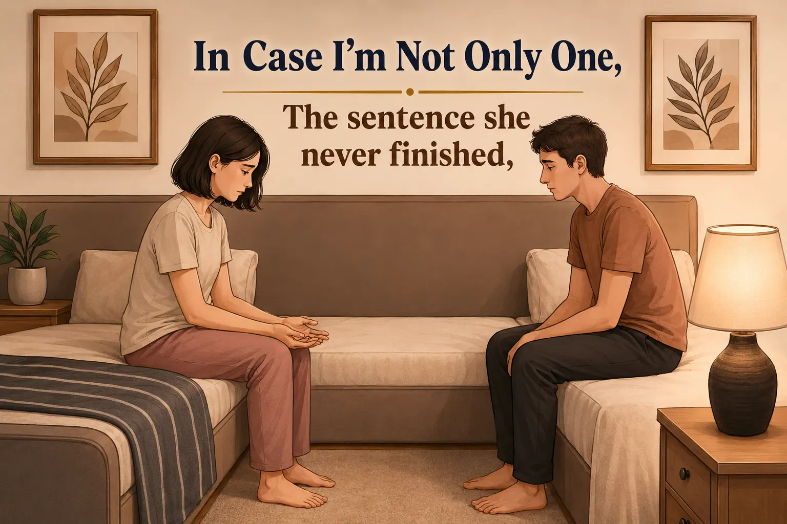
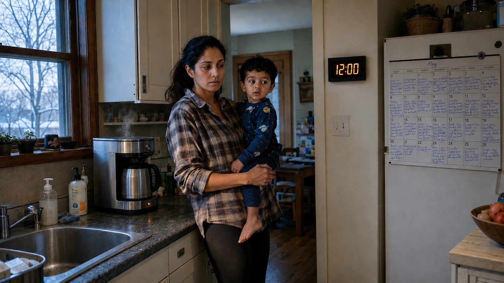

Lily's shoes were already by the door. Her lunch was packed the night before, the way it always was now, and when I came downstairs there was coffee made and Sarah was reading something on her phone with the particular stillness of a person who has already checked everything twice.
Nobody was rushing. Nobody was raising their voice. Denise arrived at 7:40 the way she always did, and by 7:52 Lily was buckled in and gone, and I remember standing in the kitchen with my coffee thinking, not for the first time, this is what it's supposed to look like.
I want to be honest about something before I go any further. I liked that morning. I was proud of it, in some small, stupid way, like we'd finally figured out a trick other people hadn't. It did not occur to me to ask what it had taken to make a morning look like nothing was happening in it.
I wouldn't understand the actual cost of that morning for another six weeks.
What We Thought We'd Solved
Sarah's second promotion came through last spring — technical program manager at a company in Oakland, the kind of job where her whole value is keeping complicated things running whether or not she's in the room. I teach seventh-grade science across the bay.
We hired real help for the first time: not a weekend sitter, five days a week, so Sarah could stop stepping out of client calls for a sick four-year-old, and I could stop grading at midnight after bedtime fell apart again.
Denise Carter came to us through a friend of a friend. Fifty-eight, direct, warm, three grown kids of her own. Lily loved her by the second day.
And the mornings got quiet. The evenings got quiet. I told my brother, on the phone, that we'd basically solved it — I used that word, solved — and I meant something by it that I didn't fully examine at the time: that the weight, whatever it had been, had gotten lighter for both of us, in roughly the same way.
I was only ever checking my own side of that.
A Question I Didn't Have
It was a Tuesday, maybe three weeks after the morning I described. Denise caught me in the driveway on my way to school and asked, easily, whether Lily's allergy re-test was this Thursday or next.
I didn't know there was a re-test.
"I think Sarah has that," I said, and even as I said it I heard how it sounded — like a man describing a filing system he'd never once opened.
Denise smiled the smile you give someone who doesn't know something obvious. "I'll just text her," she said, and went back inside.
I sat in the car for a minute before I started the engine. Not because the question itself mattered so much. Because I realized I had no idea where that kind of thing would even live, if I went looking. Not in my head. Not anywhere I'd have thought to check.
A question I didn't have — the moment before a thought forms.
A Kid I Teach
I didn't think about the driveway again until fourth period, watching a kid named Marcus finish a lab sheet without asking a single question — the way he always does. Never causes a ripple in a room of thirty-one twelve-year-olds who mostly do.
Watching him, I realized I couldn't actually tell you how he was doing. Not because nobody cared. Because nothing about him had ever asked anyone to check.
I didn't have a word yet for why that thought sat down next to the driveway in my head and stayed there. I just carried both of them home, unresolved, and didn't think about either one again until that night.
What Was on the Shared Drive
Sarah went up to shower around nine. I opened our family folder — tax stuff, school forms, the things we never look at — and found a document I didn't recognize.
It wasn't a list. It had a structure to it: numbered sections, an order of who to call and when, Lily's allergy protocol written out step by step, a page about Denise's pay — state disability insurance, unemployment insurance, a W-2 instead of cash, because California treats a nanny working real hours as a real employee, with real rules about breaks, and somebody had clearly decided, alone, that we were going to do this properly.
I scrolled for longer than I meant to. It wasn't a to-do list. It was the kind of document you write when you're the only person who understands how something works, and you're trying, quietly, to make sure it doesn't depend on you forever.
I heard the shower shut off before I'd closed the laptop.
What was on the laptop — fifteen years of knowing, written down.
What Neither of Us Said Cleanly
Sarah came in, saw the screen, and stopped in the doorway.
"You weren't supposed to find it like this," she said.
I didn't have anything ready. "What is it."
She sat on the edge of the bed. A long pause — long enough that I almost filled it, and made myself not.
"It's just — stuff," she said. "For Denise. In case."
"In case of what."
She looked at her hands instead of me. "In case I'm not the only one who knows it."
Neither of us said anything for a second. Then, without really deciding to, I said, "Is this the bus thing. From that call."
She looked up, surprised, like she hadn't expected me to have kept that. "Yeah," she said. "That." And then nothing else — no explanation, like she'd used up whatever it would have taken to say more.
"I don't actually know what it means," I said.
"I know." She almost smiled, but it didn't finish. "I didn't either, really, until I had to write all of it down for someone who wasn't you."
For a second I thought that was the end of it. Then, quieter, not really looking at me: "I don't think I minded. Doing it, I mean. It was the writing it down that got to me. Explaining it made it — " She stopped there. She didn't pick the sentence back up, and I didn't ask her to.
That was the whole conversation. No thesis, no clean landing. She got up a minute later and turned off the light, and I lay there a long time not sleeping, the driveway and Marcus and the document all sitting in the same place in my head without yet agreeing to mean the same thing.

In case I'm not the only one — the sentence she never finished.
What I Worked Out Later, Alone
It took me most of a week, grading papers at the kitchen table after Sarah had gone up, to actually put it together.
The reason the mornings had looked so easy wasn't that the work had gotten smaller. It was that Sarah had gotten good enough at it that it stopped looking like work at all — to Denise, to Lily, to me, and maybe even to her. Nothing had ever gone wrong long enough for any of us to notice what was keeping it from going wrong. That's the part I couldn't shake once I saw it: the better she did it, the less anyone could see there had ever been anything to do.
It's the same reason I couldn't tell you how Marcus is really doing. Fine looks identical to invisible, until something forces the difference into view.
There's a name for that blind spot in a completely different field, too. Public health has its own version: a prevention effort can work so well, across a whole population, that no single person can point to what it prevented for them specifically. Success erases its own evidence there as well. I hadn't expected the same shape to turn up in epidemiology and in my own kitchen, but there it was.
There's a name, I found out later, for the piece of this that's about two people and what they know: a transactive memory system — the way partners divide up what they each keep track of, so neither one holds everything. It's efficient. It's also almost entirely unwritten, which is exactly why it doesn't transfer. Denise hadn't had fifteen years in our house the way Sarah and I had had them with each other. Someone had to turn all of that unwritten knowledge into something a stranger could actually use — and that job could only ever go to the one person who already had it.
Hiring Denise hadn't made that job smaller. It had just added someone else who, without meaning to, would default to asking Sarah first.
It's all the same thing, is what I keep coming back to. Sarah already had a word for it — the one from that phone call, the one she'd used before I understood what it meant. A bus factor of one. I have Marcus, fourth period, never raising his hand. Sarah just had an ordinary Tuesday that nobody, including her, had flagged as unusual. Three different rooms. Same disease. Only one of us knew there was a cure.
What's Different Now
I wish I could say one conversation fixed it. It didn't. I don't think a year gets undone at eleven at night.
What actually changed is smaller than that. I started reading the document — properly, the way you'd read instructions for a job you were about to start. Some weeks now, when it needs updating, it's mine to do, not hers to remember to delegate.
Denise called me instead of Sarah not long after — an allergy question, the kind she used to save for whoever picked up first. She'd checked the document before she called, she said, just to make sure she wasn't asking something already answered. It was. She asked anyway. Old habit, she said, and we both let that be true.
A few weeks ago Sarah went to add something and found I'd already written it in that morning. She didn't make anything of it out loud. She just added a line underneath: bus factor: 2. I only half-understood it, and didn't ask her to explain the rest.
Last Tuesday the morning looked almost exactly like the one I described at the start — shoes by the door, lunch packed, nobody raising their voice. The difference is small enough that a stranger watching wouldn't have caught it. I made the lunch. Sarah didn't have to think about whether I would.
She noticed anyway — she probably always will, that's not a switch that turns off just because I started paying attention. But she watched me zip the bag closed, and said, "That's new," in a voice that wasn't quite relief and wasn't quite disbelief. Just noticing, the way you notice weather turning.
It still looked like nothing was happening. That's what a good morning is supposed to look like. I just finally understand what that quiet is actually made of.
That's new — small enough that a stranger wouldn't catch it.
Signs the Mental Load Has Concentrated on One Partner
Not a diagnosis — just the pattern researchers describe, and the one this story traces. Worth a quiet read together, not a scorecard.
- One person is the default contact for the kids' school, doctor, or caregiver — even for things the other partner could just as easily answer.
- Household information (schedules, allergies, passwords, routines) lives in one person's head rather than somewhere both partners can access it.
- Outsourcing chores (a cleaner, a nanny, meal kits) reduced physical tasks but not the planning, remembering, and deciding behind them.
- One partner can describe the household's systems in detail; the other would need to ask before they could run it for a week.
Sources
- Wegner, D. M. (1987). Transactive memory: A contemporary analysis of the group mind. In Theories of Group Behavior. Springer.
- Reich-Stiebert, N., Froehlich, L., & Voltmer, J.-B. (2023). Gendered mental labor: A systematic literature review on the cognitive dimension of unpaid work within the household and childcare. Sex Roles, 88(11–12), 475–494.
- Rose, G. (1985). Sick individuals and sick populations. International Journal of Epidemiology — origin of the "prevention paradox."
- "Bus factor." Wikipedia — term origin and definition in software engineering and knowledge-concentration risk.
- California Domestic Worker Bill of Rights and household employer requirements — California Employment Development Department (EDD).
- Catalano Weeks, A., & Ruppanner, L. (2025). A typology of US parents' mental loads: Core and episodic cognitive labor. Journal of Marriage and Family, 87(3), 966–989.
- Weeks, A. C., Kowalewska, H., & Ruppanner, L. (2025). Take a load off? Not for mothers: Gender, cognitive labor, and the limits of time and money. Socius: Sociological Research for a Dynamic World, 11, 1–17.
Frequently Asked Questions
What is "mental load" in a relationship?
Mental load is the invisible planning and tracking work behind a household — noticing what's needed, remembering it, deciding how to handle it — separate from doing the physical task itself. Research shows it tends to concentrate on one partner even in households where physical chores are split evenly, which is part of why it's easy to miss until something forces it into view.
What does "bus factor" mean, and why does this article use it?
Bus factor is a software engineering term for how many people would need to disappear from a project before critical knowledge is lost — a bus factor of one means the whole thing depends on a single person. This article borrows it because a household can have the same problem: one person can hold all the operational knowledge, and nothing shows the risk until that person is unavailable to answer a question.
What is a transactive memory system?
It's a concept from psychology describing how two people in a close relationship divide up what each of them keeps track of, so neither one has to remember everything alone. It's efficient by design, but because it's rarely written down, that division doesn't transfer easily to anyone outside the relationship — which is part of what makes it hard to hand off to new help.
Is hiring a nanny in California actually subject to formal labor rules?
Yes. California's Domestic Worker Bill of Rights extends standard employment protections — including overtime and rest-break rules — to household employees working real hours, and treats a nanny as a W-2 employee rather than an informal cash arrangement.
Does hiring help actually reduce the mental load?
Research on outsourcing household labor suggests it mainly reduces the physical tasks, not the planning behind them — someone still has to notice what's needed, decide how to handle it, and manage whoever was hired to help. In this story, hiring a nanny made the mornings easier without making the underlying load smaller; that only started to shift once the knowledge itself was written down and shared, not just the tasks.
If This Sounded Familiar

Why the most important labor in a home leaves no evidence of itself — and what it costs when nobody notices.
Read More →
Why the task-splitting conversation never quite works — and what actually moves the weight.
Read More →